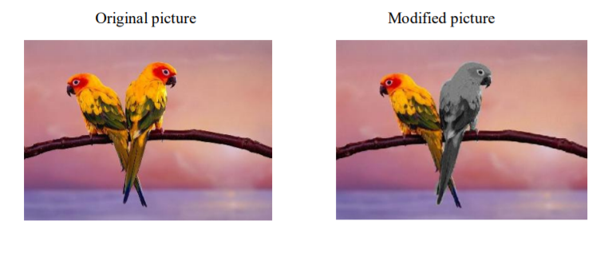

| HOME |
|---|
| BACK |
| PROCEDURE TO MAKE ANYONE OF ONE OF THE PARROTS BLACK & WHITE IN A GIVEN PICTURE |
STEPS:-
1. Open adobe Photoshop 7.0-> file->open original parrot picture.
2. Select a parrot using lasso tool from the tool bar.
3. after selection->go to image-adjustments->desaturate.
4. Then selected picture will now turn to black and white.
5. save as modified image.
OUTPUT:-
